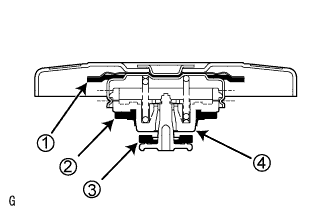
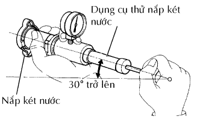

KÉT NƯỚC > KIỂM TRA TRÊN XE |
| 1. KIỂM TRA NẮP KÉT NƯỚC |
|  |
Đo áp suất mở van.
Nếu nước biến màu hoặc có vật thể lạ trên phần cao su 1, 2 hay 3, hãy làm sạch các phần đó bằng nước và cọ bằng tay.
Kiểm tra rằng 1, 2 hay 3 không bị biến dạng, nứt hay bị rỗng.
Kiểm tra rằng 3 và 4 không kẹt vào nhau.
Hãy đổ nước làm mát động cơ vào 2 hoăc 3 trước khi dùng dụng cụ thử nắp két nước.
Khi dùng dụng cụ thử nắp két nước, hãy nghiêng nó nhiều hơn 30°.
|  |
Bơm dụng cụ thử nắp két nước vaiø lần và kiểm tra áp suất lớn nhất*.
Tốc độ bơm: 1 lần bơm/ một giây
| Hạng mục | Điều kiện tiêu chuẩn |
| Giá trị tiêu chuẩn (cho Loại nắp mới) | 93.3 đến 122.7 kPa (0.95 đến 1.25 kgf/cm2, 13.5 đến 17.8 psi) |
| Giá trị chuẩn nhỏ nhất (sau khi dùng nắp) | 78.5 kPa (0.8 kgf/cm2, 11.4 psi) |